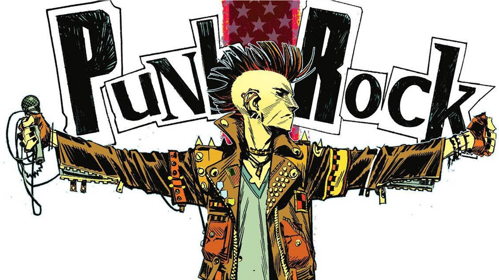

PUNK ROCK
Es un género musical que emergió a mediados de los años 70. Este género se caracteriza en la industria musical por su actitud independiente y contracultural. En sus inicios, el punk era una música de composición minimalista, muy simple y cruda, y a veces, descuidada: un tipo de rock sencillo, con melodías agresivas de duraciones cortas, sonidos de guitarras amplificadas poco controladas y ruidosas cargadas de mucha distorsión, escasos arreglos e instrumentos y, por lo general, compases y tempos rápidos.
Las líneas de guitarra se caracterizan por la sencillez y crudeza del sonido amplificado y muy distorsionado que crean un ambiente sonoro ruidoso o agresivo heredado del garage rock. En ocasiones, el bajo sigue solo la línea del acorde y no busca adornar con octavas ni arreglos en la melodía pero, por lo general, en las primeras formaciones de punk (aspecto que se repetiría más adelante con las bandas de post punk), el bajo presenta arreglos sencillos y constantes, luciendo en muchos de los casos más que la guitarra.
Las voces varían desde expresiones fuertes a expresiones violentas o desgarradas, mientras las letras se caracterizan por tratar temas políticos y sociales (llevando un mensaje de conciencia que se extiende con el objetivo de denunciar por medio de la música este tipo de problemas). También se tratan temas relacionados con las drogas, el amor, el pacifismo, etc. La música Punk continúa siendo un género influyente en la música popular, y el estilo punk sigue siendo una influencia en la moda y el arte contemporáneos.
Entre sus representantes más destacados se encuentran como Sex Pistols, The Clash y The Damned, y bandas estadounidenses como Ramones, The Dead Boys y Blondie. Los instrumentos más comunes para este tipo de música son la guitarra eléctrica, bajo, batería.
